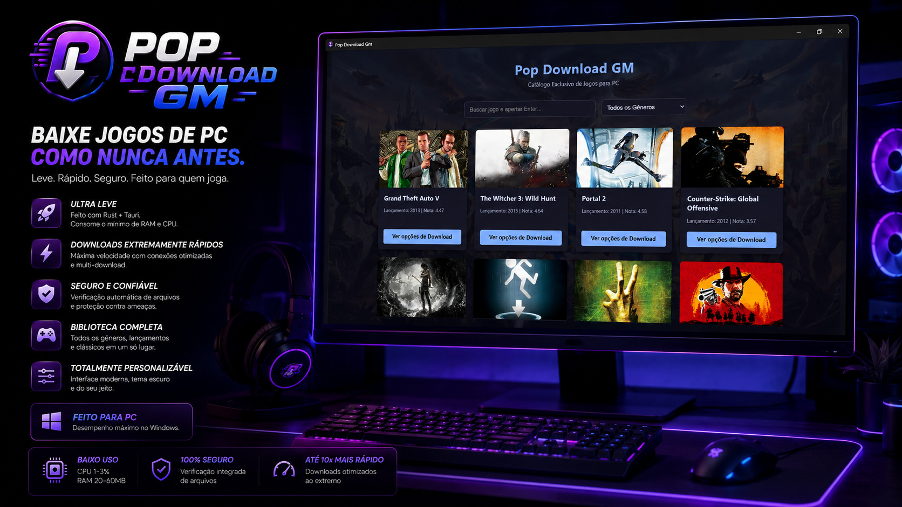

Feito para PC
Instale no Windows e tenha um painel direto para descobrir jogos, acompanhar downloads e acessar tudo sem menus complicados.
Central gamer de downloads para Windows
Um hub gamer para PC feito para encontrar, organizar e baixar jogos de repack no Windows, com visual de launcher moderno, foco em praticidade e consumo extremamente baixo de memoria RAM.

Feito para chamar atencao
Instale no Windows e tenha um painel direto para descobrir jogos, acompanhar downloads e acessar tudo sem menus complicados.
Encontre opcoes populares de repack em uma biblioteca limpa, com informacoes importantes como tamanho, categoria e status.
Projetado para ficar aberto em segundo plano sem travar seu setup, consumindo pouquissima RAM mesmo durante a navegacao.
Versao atual
Leve, direto e feito para ficar aberto sem pesar no PC. Troque o link do botao pelo arquivo real do instalador quando estiver pronto para publicar. A pagina ja esta preparada para GitHub Pages, Netlify ou Vercel.
Perguntas rapidas
Substitua o simbolo # nos botoes de download pelo link real do instalador do Windows.
GitHub Pages e uma boa opcao para site estatico. Netlify tambem e simples e tem publicacao por arrastar a pasta.
Sim. Os textos estao no arquivo HTML e as cores principais estao no inicio do arquivo CSS.